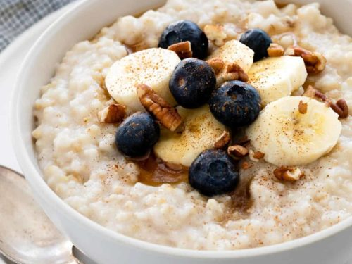

Oatmeal is one of the most healthy breakfast which anyone can prepare anytime. You don't need to be a cook to prepare oatmeal and it takes nearly 20 minutes to prepare. There are mainly two varities of oatmeal: one using milk and other with a frying spicy way. The best part of oatmeal is that you can safely substitute it for your meals sometimes as it allows to add fruits, dry fruits and other edibles into its ingredients list. This makes oatmeal a healthier option to opt for as a breakfast and evening snacks.

How to make Milk Oatmeal?
Ingredients:
- Milk
- Rolled Oats
- Sugar
- Fruits
- Dry Fruits
- Honey (optional)
Steps:
- Boil around 300ml milk and lower the stove flame.
- Put some grinded dry fruits into it and leave it for 2 minutes.
- Add 3/4th cup of rolled oats and keep stirring for 8-10 minutes.
- Turn off the stove and leave it for 5 minutes.
- Cut the fruits and put it as toppings over the oatmeal.
- You can add a tablespoon or two of honey for flavour.